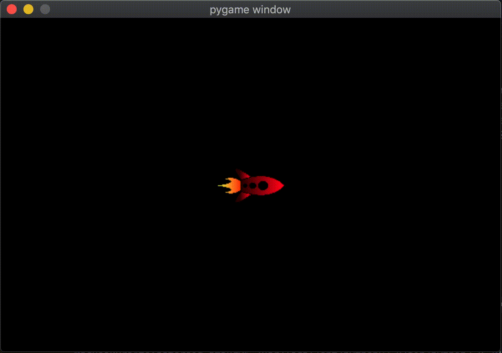

Gestion des événements
Pour créer un jeu vidéo, il faut afficher ce que nous souhaitons, mais également percevoir les intentions de l'utilisation. Pour cela il est nécessaire de gérer les événements perçus par le clavier et/ou la souris.
A la fin de cette section, votre programme permettra à l'utilisateur de contrôler la fusée grâce aux flèches comme le montre la vidéo ci-dessous.

Exercice 2
- 2.1. Modifier votre programme afin que l'utilisateur puisse faire bouger la fusée avec les flèches du clavier: à chaque fois que l'utilisateur presse sur la touche gauche, la fusée se déplace d'une case vers la gauche, pareil pour la droite...
- 2.2. Il y a un problème: lorsque l'utilisateur garde une touche appuyée, la fusée ne continue pas de bouger. Modifier votre programme afin que si l'utilisateur garde une touche du clavier pressée alors la fusée continue de se déplacer dans la direction désirée. Arrangez vous pour que cela se fasse à 60 FPS.
- 2.3. Pour l'instant la fusée ne se déplace pas dans la direction où elle pointe. Modifier votre programme afin que les flèches gauches et droite modifient sa direction et que les flèches haut et bas la fasse avancer et reculer dans la direction vers laquelle elle pointe.
- 2.4. Comme nous sommes dans l'espace, lorsque nous appuyons sur l'accélérateur cela ne devrait pas faire changer notre position, mais notre vitesse. Modifier votre programe afin que les flèches haut et bas agissent sur la vitesse et non la position comme dans la vidéo ci-dessus.